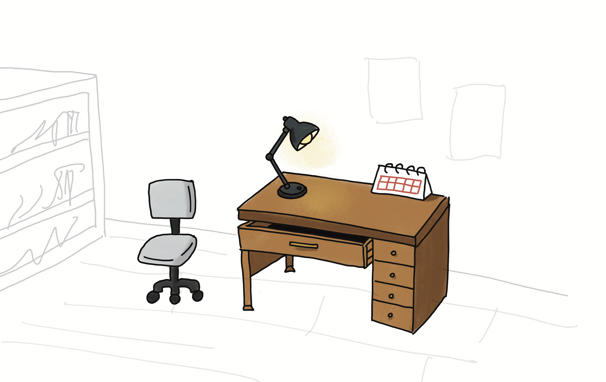

1

ã“ã®æ‰‰ã‚’é–‹ã‘ãŸã‚‰ã€ã¾ã åå‰ã®ãªã„物èªãŒå‹•ãã¯ã˜ã‚る。
2
メモは小さな声で、忘れかけていた気持ちを呼び起こす。
3
å…‰ãŒè½ã¡ã‚‹å ´æ‰€ã«ã€æ‰‹ã®å‹•ããŒç”Ÿã¾ã‚Œã‚‹ã€‚
4
ページの間（ま）に、ひそかな余白がひろがる。
5
準備ができたら、合図を。ここから本当の『秘密スタジオ』へ。
「秘密スタジオへ」ボタンから、体験ゾーンに進めます。
スクãƒãƒ¼ãƒ«ã§èªã‚€ / â†â†’ でページ移動。紙芝居は右上の切替で。